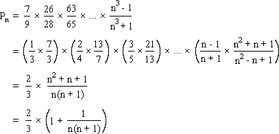

Solution to puzzle 15: Infinite product
Find the value of the infinite product
Factorizing numerator and denominator, we have
k3 - 1 = (k - 1)(k2 + k + 1)
k3 + 1 = (k + 1)(k2 - k + 1)
Note that (k+1)2 - (k+1) + 1 = k2 + k + 1, and so k3 + 1 = (k + 1)[(k+1)2 - (k+1) + 1].
We can now calculate Pn, the partial product of the first n - 1 terms.
As n , Pn  2/3.
2/3.
That is, the infinite product, P, converges to 2/3; P = P = 2/3.
= 2/3.
Remarks
Letting w = -1/2 + i /2 be a complex cube root of unity, we have
/2 be a complex cube root of unity, we have
k3 - 1 = (k - 1)(k - w)(k + w + 1)
k3 + 1 = (k + 1)(k + w)(k - w - 1)
This shows explicitly that (k+1)2 - (k+1) + 1 = k2 + k + 1, and how to telescope the partial product.
Further reading
Source: Infinite product, equation 9